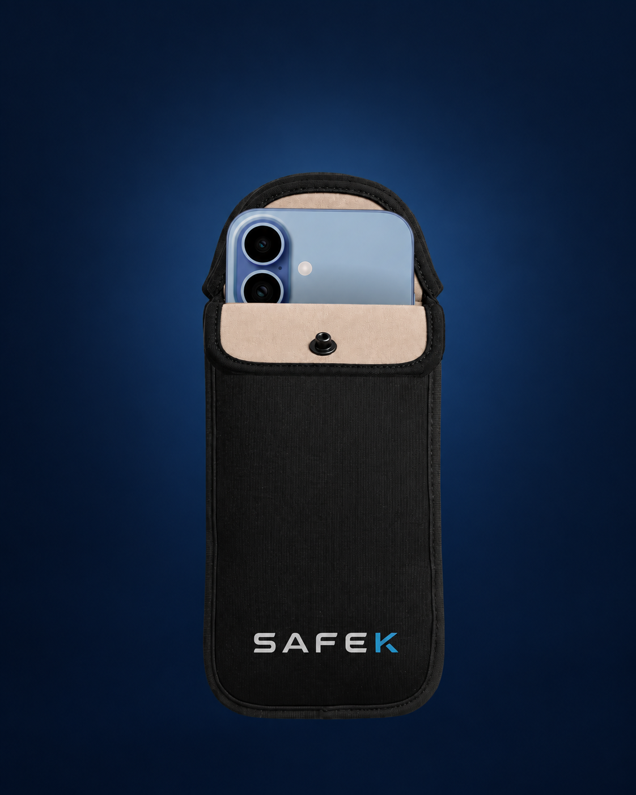

Guarde o celular
Ao entrar no espaço, coloque seu aparelho dentro da bolsa SAFE-K.
O produto
A SAFE-K é uma bolsa com fechamento que mantém o celular guardado durante aulas, reuniões e eventos. Cada pessoa permanece com seu aparelho, enquanto o espaço organiza os momentos e os locais de acesso.
Produto SAFE-K patenteado.

Entenda a bolsa
Na entrada, a pessoa coloca o celular na bolsa e fecha a trava. A bolsa permanece com seu dono durante a atividade: o aparelho não precisa ser entregue à organização.
O fechamento mantém o celular guardado até que a bolsa seja encostada em uma base de desbloqueio, disponível nos pontos definidos pelo espaço.
Se precisar usar o aparelho, procure a área de desbloqueio ou a equipe responsável. Depois, guarde o celular novamente para continuar a experiência.
A instituição define os períodos de uso, orienta os participantes e organiza o acesso durante a atividade e na saída.
Ao entrar no espaço, coloque seu aparelho dentro da bolsa SAFE-K.

A bolsa é trancada e continua com você durante toda a experiência.

Procure a área de desbloqueio e encoste a bolsa em uma base.
Acesso ao aparelho
A instituição organiza os pontos de desbloqueio e orienta o acesso durante a atividade e na saída.
Não. O celular continua em sua posse, dentro da bolsa. Você permanece com o aparelho durante todo o período de uso.
Basta encostar a bolsa em uma base de desbloqueio, disponível nos pontos definidos pela organização do espaço. A equipe local orienta o acesso.
Procure a área de desbloqueio ou a equipe responsável. A organização deve comunicar os pontos de acesso e orientar situações que demandem o uso do aparelho.
O funcionamento apresentado é a restrição de acesso físico ao aparelho pela bolsa trancada. Não se trata de uma promessa de bloqueio de sinal, chamadas ou conectividade.